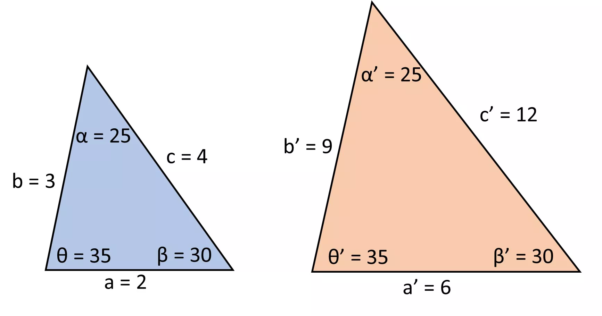
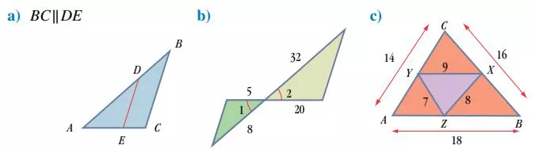
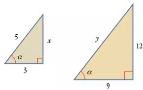

Semejanza de figurasSi dos figuras tienen la misma forma, se dice que son semejantes (∼).
Esto significa que tienen respectivamente iguales sus ángulos y proporcionales sus lados. Ejemplo:

Las figuras semejantes pueden tener igual o diferente tamaño.
Dos figuras son semejantes (∼) cuando tienen la misma forma. Esto significa que ambas figuras tienen respectivamente iguales sus ángulos y proporcionales sus lados (sus cocientes son iguales).
Los elementos homólogos son los ángulos y lados que se corresponden en ambas figuras. En la figura son homólogos: a y a', b y b', c y c', α y α', β y β', θ y θ'.
El cociente (división) de dos lados homólogos se llama razón de semejanza.
Según el orden en que compares las figuras, obtendrás una razón o su recíproca.
Tomemos como ejemplo la figura anterior, obtenemos la razón de semejanza al dividir los lados homólogos,
\(\displaystyle k=\frac {a}{a'}=\frac {2}{6}=\frac {1}{3}\)
\(\displaystyle k=\frac {b}{b'}=\frac {3}{9}=\frac{1}{3}\)
\(\displaystyle k=\frac {c}{c'}=\frac {4}{12}=\frac {1}{3}\)
y el reciproco de la razón de semejanza al invertir la división.
\(\displaystyle k'=\frac {a'}{a},=\frac {6}{2}=3\)
\(\displaystyle k'=\frac {b'}{b}=\frac {9}{3}=3\)
\(\displaystyle k'=\frac {c'}{c}=\frac {12}{4}=3\)
Significado de la razón de semejanza Igual a 1: figuras iguales.
Menor que 1: reducción.
Mayor que 1: amplificación.
Semejanza de triángulosPara saber si dos triángulos son semejantes no es necesario comparar todos sus elementos. Los siguientes criterios indican cuáles debes comparar.
Criterios de semejanza de triángulosDos triángulos son semejantes si tienen respectivamente:
Criterio AA. Dos ángulos iguales.
Criterio LLL. Tres lados proporcionales.
Criterio LAL. Dos lados proporcionales e igual el ángulo entre ellos.
Ejemplo 1. Aplicando criterios de semejanza, indica el criterio que permite establecer la semejanza de los triángulos.

Solución
a) AA. Los respectivos ángulos tienen lados paralelos.
b) LAL. \(\frac {20}{5}=\frac {32}{8}=4\) y Ángulo 1 = Ángulo 2 por ser opuestos por el vértice.
c) LLL. ∆ABC ∼ ∆XYZ porque \(\frac {18}{9}=\frac {16}{8} = \frac {14}{7}=2\)
Ejemplo 2. Comparando triángulos mediante igualdades.
De la siguiente figura:
a) Hallar la razón de semejanza y su reciproco entre el triángulo mayor y el menor.
b) Determinar el valor de los lados desconocidos.

Solución
Los triángulos mostrados son semejantes por el criterio AA.
a) Los lados homólogos conocidos miden 9 y 3. Así,
\(\displaystyle k = \left(\frac {{Homólogo}_{mayor}}{{Homólogo}_{menor}}\right)_{rázon}=\frac {9}{3} = 3 \)
\(\displaystyle k'= \left(\frac {{Homólogo}_{menor}}{{Homólogo}_{mayor}}\right)_{rázon}=\frac {3}{9} = \frac {1}{3}\)
b) Para determinar x usamos la razón de proporción que corresponde.
\(\displaystyle {Homólogo}_{menor\,desconocido} = {Homólogo}_{mayor\,conocido}\cdot \left(\frac {{Homólogo}_{menor}}{{Homólogo}_{mayor}}\right)_{razón}\)
\(\displaystyle x = 12\cdot \left (\frac {1}{3} \right )=4\)
Para determinar y usamos la razón de proporción que corresponde.
\(\displaystyle {Homólogo}_{mayor\,desconocido} = {Homólogo}_{menor\,conocido}\cdot \left(\frac {{Homólogo}_{mayor}}{{Homólogo}_{menor}}\right)_{razón}\)
\(\displaystyle y = 5\cdot ( 3)=15\)